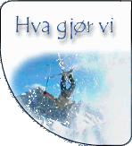

Skoleåret 2001 / 2002 satser Telemarkgruppa på å opprettholde et høyt aktivitetsnivå. Årets nyvinninger er først og fremst Alpetur til Chamonix og tur til Oppdal. Chamonix-turen erstatter den tradisjonelle turen til Åre. Forøvrig vil skifestivalen i år bli komprimert til én dag.
Treninger: HØST-01 mandag 1945-2130 (gløs) og onsdag 2030-2200 (drag) VINTER-02 tirsdag 1800--> og torsdag 1800--> (vassfjellet) Sist oppdatert 09.11.01 |
||||||||||||||||||||||
|
 |